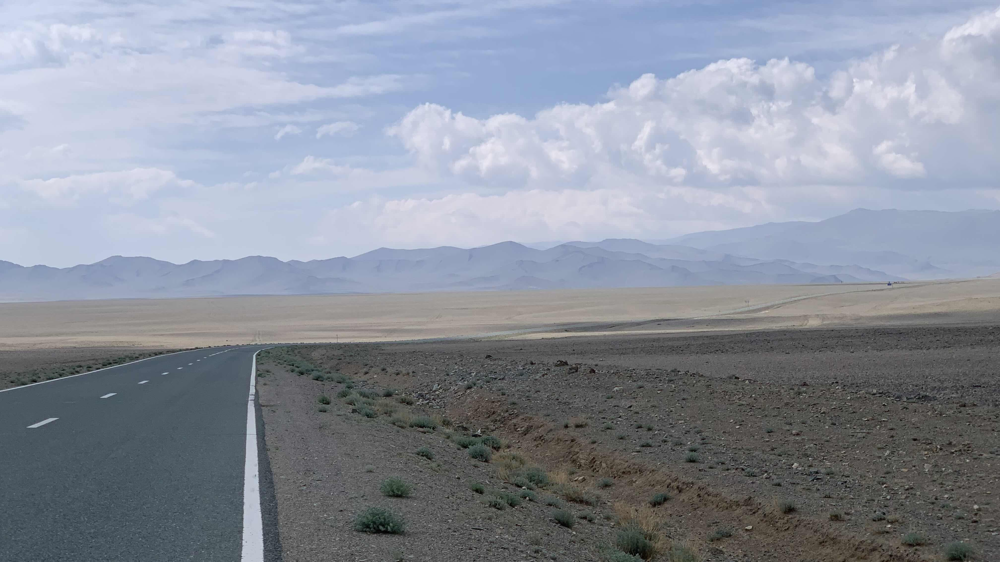
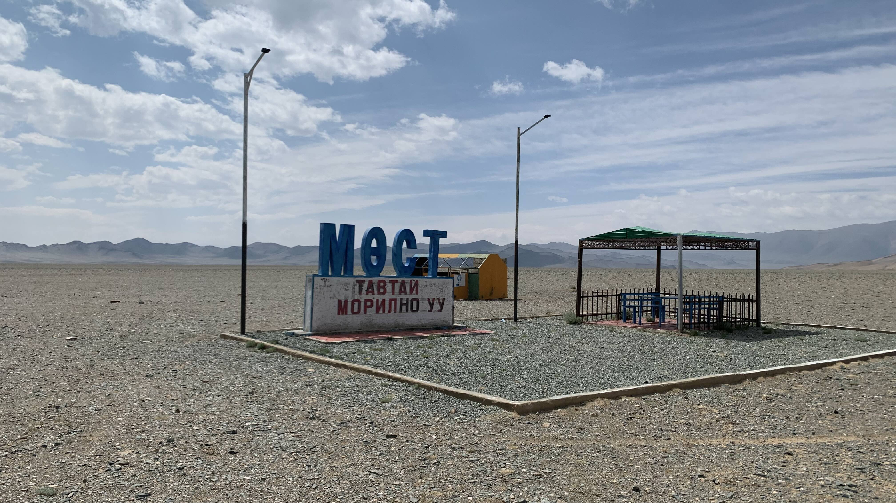
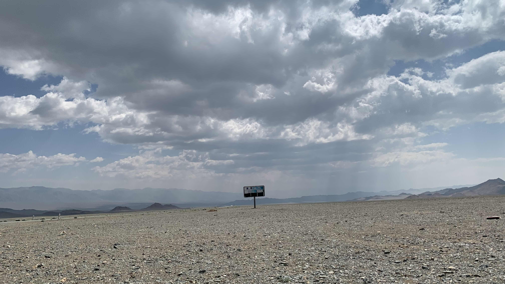
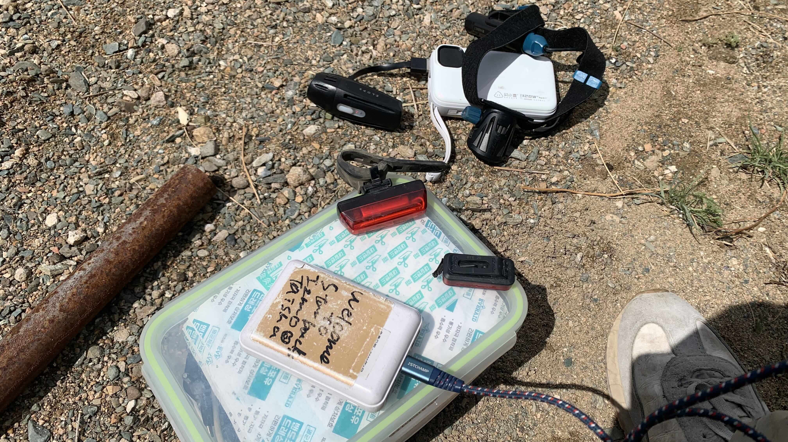
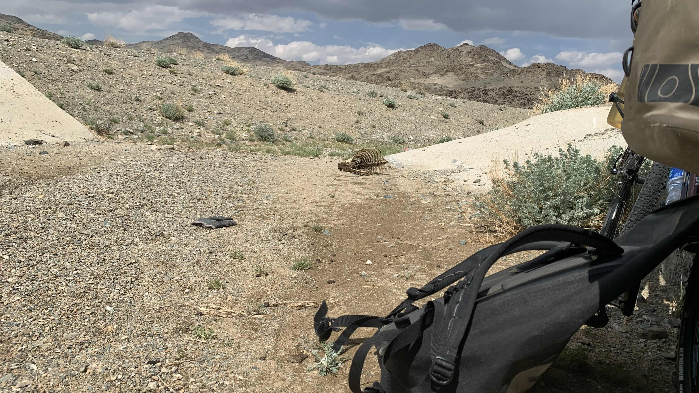
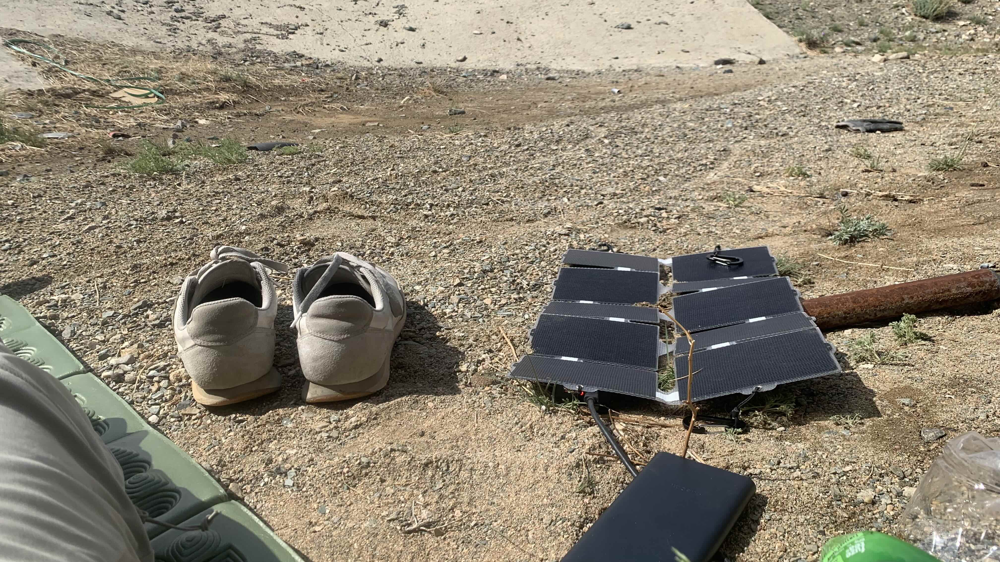
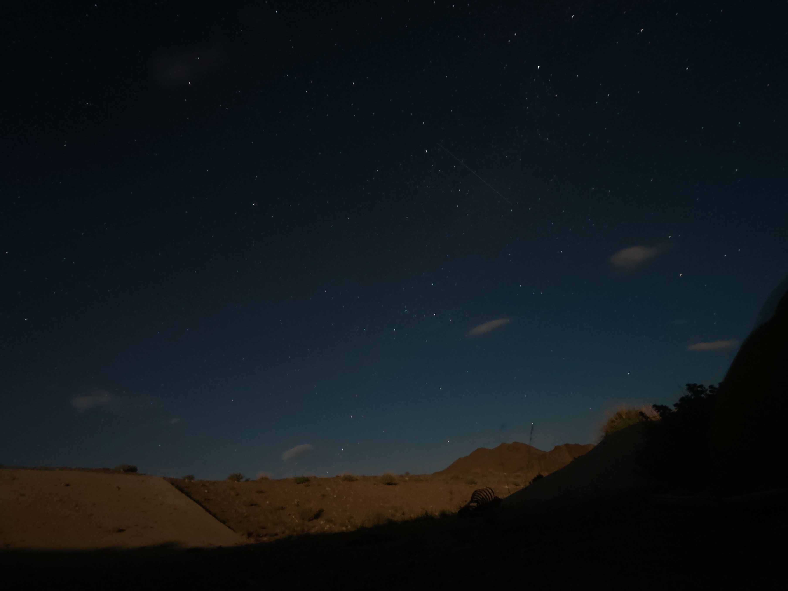

k-Day 113｜自我消滅（二）
收拾好帳篷，坐在涵洞下，呼吸有點急促。雙手不知為何又開始發麻。推車回到柏油路上，喘了好久，靠在車上幾分鐘才緩過來。

上車踩了兩下發現風勢已然不妙，趕緊下車半蹲著抓住把手。

推車轉近休息區，顧不得滿地碎玻璃，拖著二十三號躲到水泥塊後方。

此處蒼蠅甚多，垃圾桶和公共衛生間也傳來惡臭，不是可以休息的地方。無論如何必須往前走才行。

和二十三號互相依靠著，仍然無法穩定前進。好想死，不，我不想死，讓我消失，把我傳送到真空的地方。
無法平衡，膝蓋和腳踝都拐了幾下。沒有意義，這世界沒有意義。

推了十公里左右，終於找到一個涵洞，連滾帶爬滑下碎石坡。有個動物的骨架，無所謂的，此刻的我與這骨架並無差別。
走不了就躺平吧。攤開睡墊，把前後車燈全都掏出來充電。

太陽能板接上行動電源，已經好久沒有補充電力了。

今天不搭帳篷，拉出露宿袋和睡袋。天黑後一直盯著天空，有好多疑似衛星的發光體沿著自己的軌道移動，從地球上的涵洞往上看，很慢，搖搖晃晃地，卻一直沒有消失。跟風中的我一樣。
不知怎麼腦中出現超商包子櫃的畫面，伸出右手拉開蒸汽櫃，白色肉包和我之間頓時煙霧彌漫。左手遞上一大盆鹹酥雞，「要辣嗎？」餐車後的老闆問。
「不要辣。」我在腦中喃喃自語。
今日花費： 0元